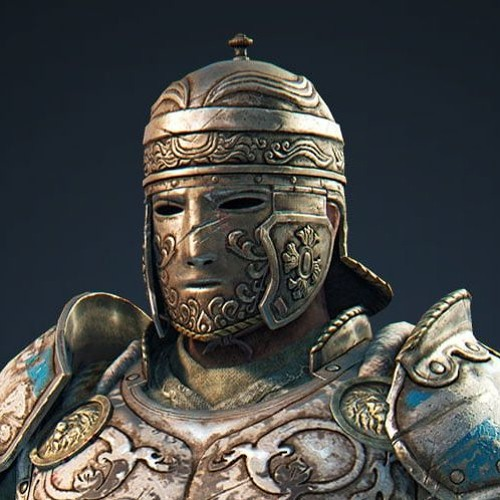

For honor es un juegazo que salió el 13 de febrero de 2017. Muy destacado por su sistema de combate tridireccional, durisimo si me lo preguntan
Es un juego desarrollado por la magnifica bugisoft, muy recordada por juegazos como rainbow six o el gran Assassin's Creed
For honor cuenta con un sistema tridireccional es decir, izquierda derecha y arriba, el juego va de combates desde 1 vs 1 hasta 4 vs 4
En el juego hay 5 facciones, los caballeros, vikingos, samurais, Wu-lin y los outlanders
Como dato curioso ya desperdicié mas de 1800 horas en esa cosa asi que ni como dejar de hablar del juego
Finalmente una mención honorifica al personaje mas chistoso y joya del juego (mi Main) el magnifico centurión

¿Quieres saber mas de este horrible juego? Pica aquí